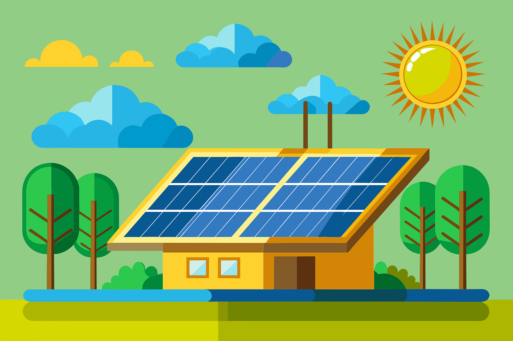
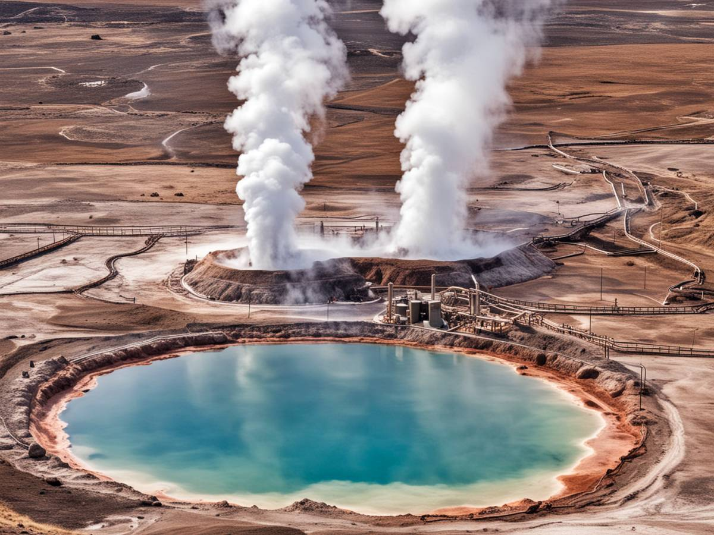

Introducción a las Energías Renovables
Las energías renovables son fuentes de energía que se obtienen de recursos naturales inagotables, como el sol, el viento, el agua y la biomasa. Estas energías son fundamentales para reducir la dependencia de los combustibles fósiles y mitigar el cambio climático.

¿Qué es la Energía Eólica?
La energía eólica es la energía que se obtiene a partir del viento. Esta energía se utiliza para generar electricidad a través de aerogeneradores, que convierten la energía cinética del viento en energía eléctrica.
Beneficios de la Energía Eólica
La energía eólica tiene múltiples beneficios, entre ellos:
- Es una fuente de energía limpia y renovable.
- No produce emisiones de gases de efecto invernadero.
- Reduce la dependencia de los combustibles fósiles.
- Genera empleo en la construcción y mantenimiento de parques eólicos.

Conclusión
La energía eólica y otras energías renovables son esenciales para construir un futuro sostenible. Invertir en estas tecnologías no solo ayuda a proteger el medio ambiente, sino que también promueve el desarrollo económico y social.
¿Qué es la Energía Solar?
La energía solar es la energía que se obtiene del sol en forma de radiación electromagnética. Esta energía se puede aprovechar mediante diversas tecnologías para generar electricidad (energía solar fotovoltaica) o calor (energía solar térmica).

Aspectos de la Energía Solar
La energía Solar tiene múltiples aspectos, entre ellos:
- Generación de Electricidad: Utiliza paneles solares (celdas fotovoltaicas) para convertir la luz solar directamente en electricidad mediante el efecto fotovoltaico.
- Calentamiento de Agua: Los colectores solares térmicos captan el calor del sol para calentar agua que se utiliza en aplicaciones domésticas o industriales.
- Aplicaciones Diversas: La energía solar también se utiliza para la iluminación solar, la refrigeración solar y otras aplicaciones que aprovechan directamente la energía solar.
- Impacto Ambiental: Contribuye a la reducción de la dependencia de los combustibles fósiles y ayuda a mitigar el cambio climático al reducir las emisiones de gases de efecto invernadero.

Conclusión
La energía solar juega un papel fundamental en la transición hacia un sistema energético más sostenible y se considera una de las tecnologías clave para el futuro energético debido a su abundancia y beneficios ambientales.
¿Qué es la Energía Geotermica?
La energía geotérmica es aquella que se obtiene del calor almacenado bajo la superficie terrestre. Este calor proviene del núcleo caliente de la Tierra, donde las temperaturas pueden ser extremadamente altas. Esta forma de energía se aprovecha principalmente para generar electricidad y proporcionar calefacción directa.
Caracteristicas de la Energía Geotermica
La energía Geotermica tiene múltiples caracteristicas, entre ellos:
- Origen y Recursos: Proviene del calor natural del interior de la Tierra, que es generado por la desintegración de elementos radiactivos y el calor residual de la formación planetaria.
- Tecnologías de Explotación: Se utiliza principalmente mediante plantas geotérmicas que aprovechan el calor del subsuelo para generar electricidad. Hay diferentes tecnologías como los ciclos binarios y los ciclos de vapor seco y flash.
- Aplicaciones Directas: Además de la generación de electricidad, la energía geotérmica se utiliza para la calefacción y refrigeración directa de edificios (sistemas de bombas de calor geotérmicas).
- Sostenibilidad: Es una fuente de energía renovable y sostenible, ya que el calor geotérmico es virtualmente inagotable a escalas humanas y no emite gases de efecto invernadero significativos durante su operación.
Conclusión
La energía geotérmica representa una opción interesante para diversificar la matriz energética global, reducir las emisiones de carbono y promover un desarrollo energético más sostenible.
